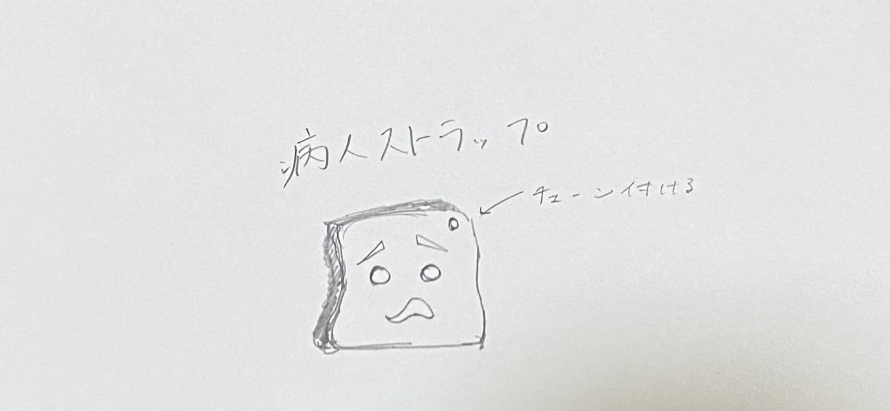
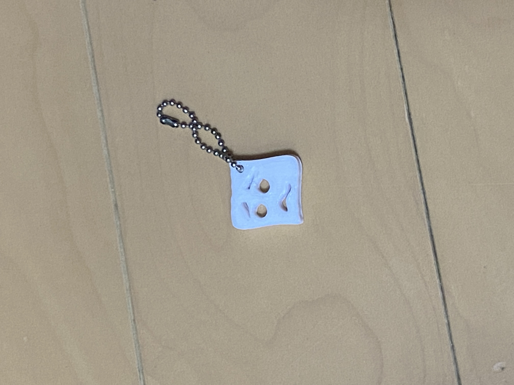

班でのテーマ
班のみんなでスケッチを出し合ったところ左右で靴が違う人がいた。
話し合いをした結果その人は怪我をしているのではないかという推測になった。
左右で違う靴を履いている人が、本当に怪我をしているかは分からない。
だからこそ本当に怪我をしている人が周りの人に分かってもらえるようなものが
あればいいと感じた。
そこで私たちの班は怪我をしている人が周りに気づいてもらえるようなモノを作ることとした。
実際に作品を作ってみた

作成前のデッサン

最初に作った作品はチェーンをつける穴が小さかったので少し大きめに調整した
感想
怪我をしている人が周りに気づいてもらうためには何が必要かと考えたときに目印なるものを身につけていれば良いのではないかと思ったのでこの作品を作った
怪我をしている人をイメージした顔を考えそれをモチーフにしたストラップを作成した